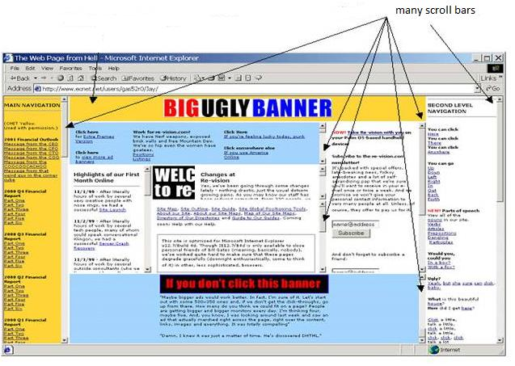
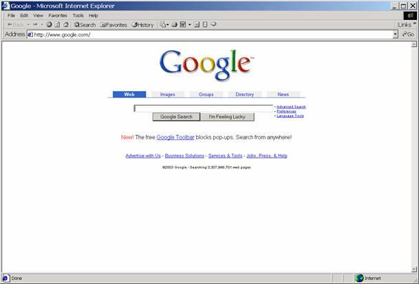
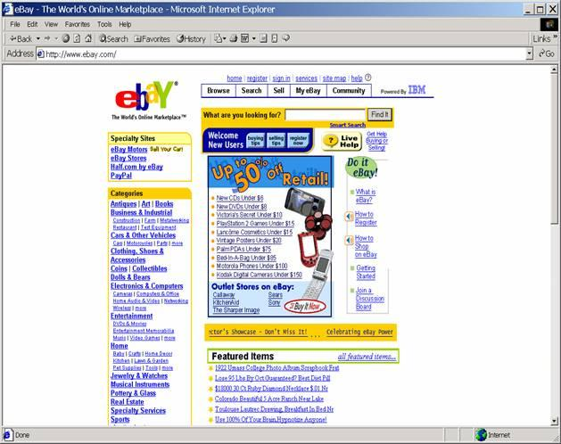

Hick’s Law
Hick's Law (for William Edmund Hick) or the Hick–Hyman Law (for Ray Hyman), predicts the time it takes to make a decision in selecting among possible choices. The Hick-Hyman Law measures cognitive information capacity. Given n equally probable choices, the average reaction time T required to choose among them is approximately.
T = b.log2(n+1)
The reaction time curve is logarithmic because for quick search we divide choices into categories, skipping half of choices at each step instead of considering each choice one-by-one. To find a given command in a randomly ordered menu, scanning each command is essential, requiring linear time, so Hick's law does not apply here. But if list is ordered we can search and select by subdividing strategy that works in logarithmic time.
Hick's Law is applicable to menu design. It helps in designing menu hierarchy and depth. When we have too many choices (long hierarchy as shown in the screenshot below) we need to cognitively categorize items to reduce the time taken to select an item at any stage. The logarithmic function of Hick’s Law decides the depth of hierarchy of the menu tree.
Application of Hick’s Law :
Figure 1. below shows an example of a bad web-page design which ignores Hick’s Law. The web-page has too many choices and scrollbars without proper blocking of contents due to which user’s reaction time is extremely compromised.
Figure 2. below shows Google website as an example of a good web-page design. It presents few and clearly distinguished choices that obeys the Hick’s Law. Layout is simple, color choices and graphics are limited thereby reducing the reaction time to a large extent.
Useful tips based on Hicks Law for web-page design
- 1.Distinguish links using colors.
2.Use consistent and familiar layouts to reduce the reaction time.
3.Use techniques (viz. lines, colors) to distinguish related blocks of information(that helps in selecting alternatives quickly) to reduce overall reaction time.
Example of such webpage is shown below ...

After performing this experiment
- 1.You will understand how the reaction time to make a choice of item on computer screen, depends on number of options available at that moment.
2.You can apply Hick’s Law to effectively design, evaluate and test menus of a GUI or a web interface.
1.You have to go to SIMULATOR tab to perform the experiment.
2.You will see a red box with a button in it.
3. An instruction will appear above the red box.
4. You have to take action as per the instruction.
5.There are total 10 instructions to execute sequencially.
6.When you are done, your reaction times that were logged will be displayed.

1.Do you see a red box with a button in it below?
2.See the instruction written above the box.
3.Execute the instruction.
4. Repeat the same for next 10 consecutive instructions.
5.RWhen you are done, your reaction times that were logged will be displayed.

Q1.Calculate using Hick-Hyman's expression, the total reaction time to select a menu item at 3rd level. Main menu has 4 submenus, each submenu has 3 sub-sub menus and each sub-sub menu has 5 options to choose from.
Q2.What holds good for horizontal menus will also hold good for vertical menus. Comment.
Q3. In which situation is Hicks' Law logarithmic and in which situation is it linear?
Hick’s Law and the role of prior knowledge in choice
Whether to use a more deep menu with more initial choices or to use a hierarchy of multi-level shallow menus is not only guided by Hicks Law but also depends on user’s prior knowledge and experience about the domain and interface.
If users generally possess sufficient prior knowledge, they can work with more initial choices, such as an alphabetized list of all choices. If users vary in their prior knowledge or the conditions that determine choice vary, then a more hierarchical menu structure (with submenu levels) may be more efficient.
You have to design a menu structure for ordering house-hold items from a mall directly to your home through a mobile phone interface. Categorize the items in whatever way you wish into menus and submenus. Design 3 alternative screens or menus for effectively ordering items from listed categories, making use of Hicks Law. Compare your designs by actually measuring the reaction time for various test cases and also using the Hick’s Law expression.

- http://en.wikipedia.org/wiki/Hick%27s_law
- http://www.hockscqc.com/articles/hickslaw.htm
- http://www.vanseodesign.com/web-design/fitts-law-hicks-law/
- http://www.catb.org/~esr/writings/taouu/html/ch04s03.html
- http://www.usabilityfirst.com/glossary/hicks-law/
- http://act-r.psy.cmu.edu/papers/910/SchneiderAnderson_2011_CogPsy.pdf
- http://psych.stanford.edu/~jlm/papers/UsherOlamiMcC02.pdf